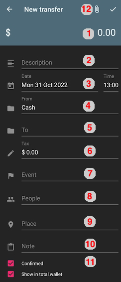

Transfers
Transfers are the companion to transactions. While a transaction has an external source/destination not managed by the app, a transfer represents money moving around within your wallets. For example, you can transfer money from your checking account to your credit card to pay it off. Or, you can withdraw cash from a bank account to your physical wallet.
While a transaction is a net loss / gain, a transfer doesn't change your total balance (unless you hide one of the wallets from the total).
Creating a transfer
You can make a transfer by opening the app's Left menu > Transactions then going to the Transfers tab. Tap the + button.

- Enter an amount in the top right corner by tapping the 0.00
- (Optional) Give your transfer a description
- Select a time (default now)
- Select a wallet the money comes "from"
- Select a wallet the money goes "to"
- Enter a tax, which can be a fee charged by ATMs or financial institutions (default 0)
- (Optional) select an event this transfer is categorized under
- (Optional) select people part of this transfer
- (Optional) select a place this is part of
As with transactions, you can optionally add a memo (note) [10], attachments (pictures, files) [12], and toggle the confirmed and "show in total wallet" checkboxes [11].
Important
Tap the checkmark in the upper right to save it
Editing a transfer
Open the app's Left menu > Transactions then switch to the transfer tab. Tap on the transfer you want to edit then the edit (pencil) button in the top right corner.
Finding a transfer
You can find transfers in much the same ways as transactions. There is one exception — you can't find them filed under people. This is because transfers only involve your finances.